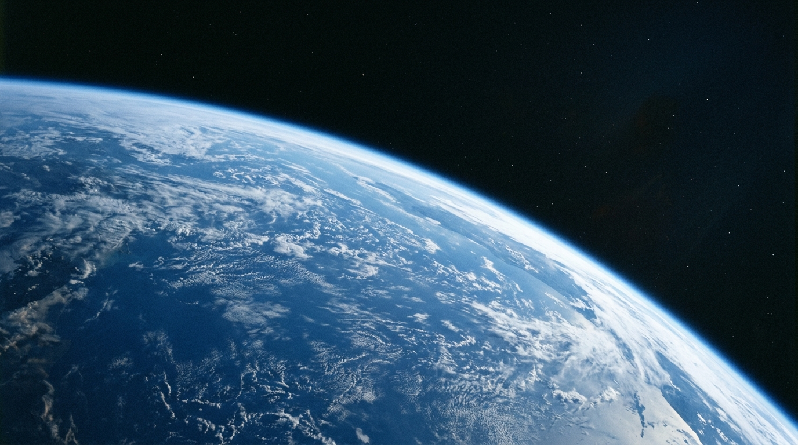

Earth Observation
Satellite imagery and changing landscapes.
Making environmental change visible through maps, data, and science.

Signal Earth is an independent environmental intelligence initiative that transforms scientific research, Earth observation, and environmental data into clear, meaningful visual stories.
Satellite imagery and changing landscapes.
Patterns, measurements, and long-term trends.
Research translated into accessible insights.
Making complex environmental change visible.
We believe environmental understanding begins with credible data, transparent methods, and responsible interpretation.
Grounded in credible scientific sources and open datasets.
Clear about sources, limitations, and uncertainty.
Complex science communicated with clarity and context.
“A clearer view of our changing planet.”
Signal Earth · Independent environmental intelligence
Explore our quantitative studies evaluating continuous ambient monitoring archives, regulatory breakpoint mechanics, and satellite thermal observations across northern India.